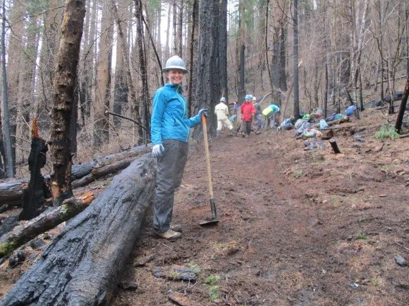

Trail Crew, First Pass
Teens maintain a real path under permission: drainage cleared, waymarks renewed, and every stretch of work logged in the crew book.
Ages 13–1445–60 min4 materials
- Ages
- 13–14
- Group
- 4–18 kids
- Time
- 45–60 min
- Where
- Outdoors
- Prep
- Some prep needed

Setup
Get the permission before you promise the crew anything, and get it specifically: walk the stretch with the owner or manager if they will walk it, agree the two ends of the crew's ground by landmarks both parties can name, and write down what is welcome (clearing the drainage grips, cutting back the named overgrowth, renewing waymarks) and what is not (no tree work, no rerouting, no touching fences, walls or signage beyond the marks agreed). Walk the stretch again alone with the crew book and grade it the way the first pass will: drainage grips choked or running, branches at face height by their count, waymarks faded, missing or misleading, litter by the handful or the bagful, so the framing can promise the group a true picture and the work can be divided into stretches a crew can finish. Check the tool store and the gloves, count everything, and decide the carry order now: tools travel closed, point-down, in the middle of the line, and nobody carries a blade and a conversation at the same time.
Materials
- the permission, in writing from whoever owns or manages the path (the crew's founding document. Which stretch, what work is welcome, what is not to be touched; carried on the day and its limits stated in the framing)
- hand tools only, counted out and back (loppers and secateurs for the overgrowth the permission names, a rake and a spade for drainage work, gloves for every hand, no power tools on a teen crew, ever)
- waymarking materials exactly as the permission specifies (the path's own paint, discs or tape standard. The crew renews the path's marks in the path's own language, never invents a prettier one)
- the crew book (a hardback log: stretch by stretch, what was found, what was done, what was left for the next crew and why. The path's memory, kept by its keepers)
Steps
- The framing, at the stretch's near end, permission in the adult's pocket: 'Leave the path better than the weather left it. This path is not ours. It is lent to us for one pass, by the people who own it, and the permission has edges we will respect exactly: this stretch, this work, these marks. A trail crew is not a tidy-up with boots on. We work the path the way its walkers need it: water off the tread, branches off faces, marks a stranger can follow in the rain. Everything we do goes in the crew book, stretch by stretch, including what we find and cannot fix, a collapsed grip, a rotten post, because the book goes back to the path's owners, and a crew that reports honestly is a crew that gets invited back. Walkers pass us all day. We step aside, tools down, and let the path's real users through first: it is their path. We are its guests with forks.' The stretches are assigned, the tool count is called aloud, and the first crew book entry, date, weather, crew names, permission reference, is written before a blade opens.
- Drainage round, the pass's first work: the crew walks its stretch slowly and reads the water's intentions. Every grip, ditch and cross-drain is found, and choked ones are cleared by hand and spade: leaves, silt and the season's debris lifted out and scattered downhill off the path, never piled where the next rain will wash it straight back. The rule taught at the first grip and repeated at every one: 'We do not fight water; we remind it where it agreed to go.' Treads that have become channels are noted, not rebuilt, rebuilding a tread is beyond this crew's permission and the book says so plainly where it matters, and any stretch where water is winning outright gets the book's fullest entry: where, how far, what the crew believes it needs, written for the owners as a work order from the people who stood in it. A grip cleared is initialled in the book by the pair who cleared it; drainage is unglamorous and the initials are its honours list.
- Overgrowth and waymark round: with drainage running, the crew turns to faces and marks, branches reaching into the walking line at head height are cut back with loppers to the permission's line, cut clean at the collar and the arisings scattered off-path; nothing taller than the crew can reach from the ground is touched, nothing with a nest, a notice or a doubt about it is touched at all, and doubt always wins. Waymarks are renewed as the permission specifies, the path's own colour, the path's own pattern, and every mark is checked from a walker's eye, at a walker's pace, in both directions: a mark you can only find by already knowing the way is a decoration, and the crew repaints or reports it accordingly. Missing marks are entered in the book with their location described the way a stranger would need it ('after the second gate, where the farm track joins'), because the book is written for the owners' next work party as much as for the record.
- The stranger test, the pass's examination: when the work is done, the crew walks its whole stretch once as strangers, at walking pace, tools carried closed, following only the path and its marks, reading the tread the way the rain will read it. Whatever the test finds goes in the book without varnish: the grip that still ponds, the mark that hides behind the new growth the crew itself just cut, the stretch where the crew's own boots have churned the edge. Fixed on the spot if it is within permission and minutes, entered as outstanding if it is not. The crew also counts its litter honestly, what it carried out, bagged and weighed by the handful if no scale offers, and enters that too, because a path's first pass is measured partly in what left the path that should never have been on it.
- Closing the pass, the book goes back: tools are counted in aloud against the morning's count, washed of mud, and stored; the crew book's final page for the day is written at the path's end, stretches worked, grips cleared by their initials, marks renewed, the outstanding list entire, and the crew's one sentence to the owners, earned at fork length. The tell-back is said on the tread the crew has just worked: 'This path is older than everyone standing on it and busier than we are, and today it drains where it should, spares the faces that pass, and shows its way in both directions, because a crew of teenagers treated it as a responsibility instead of a backdrop. The book says what we did and what we did not do, in the same handwriting. Leave the path better than the weather left it: done, and written down.' A copy of the day's pages goes to the owners with the crew's thanks for the permission. The invitation to a second pass is earned exactly there.
Variations
Easier: A one-stretch version (a short path or a first crew): a single stretch worked entire, one drainage run, one waymark line, one stranger test, inside the hour; the whole discipline at a length a new crew can finish and sign.
Harder: A second-pass version (a returning crew): the crew works from its own book. Last pass's outstanding list is the work order, last pass's cleared grips are inspected first, and the book gains a second handwriting, which is the moment a crew becomes a tradition.
⚠️ Safety
The permission is the crew's boundary and it is geographic and specific: the named stretch only, the named work only, and any job that turns out bigger than the paper, a fallen tree, a collapsed bank, a broken bridge board, is book work, reported to the owners, never hero work attempted by teenagers with loppers. Tools are counted out and in aloud, travel closed and point-down, and are set down blades-in whenever walkers pass; loppers and secateurs are used two-handed, on wood the user can see entire, never above shoulder height, and never on anything under tension the crew has not read first. Nobody works alone on a stretch, pairs minimum, within call of the adult, and the weather call is the adult's: lightning, ice on the tread, or wind strong enough to bring branches down ends the pass, and the book records the ending as a finding, not a failure. Gloves stay on for clearing and cutting alike; hands are washed before food; and anything sharp the path surrenders, glass, wire, the walker's lost knife, goes into the sharps tin the adult carries, by the adult's gloved hand, never a crew member's pocket.
🤝 Inclusion notes
Crew work divides by strength and reach as honestly as the path divides into stretches: the crew book itself, findings, initials, the outstanding list, the sentence to the owners, is a full keeper's job done walking or seated at the stretch's rest point, at the authority of the person who will be believed by the owners. Drainage pairs share lifts by agreement; waymark renewal is standing, unhurried, one-mark-at-a-time work that suits a member who paces themselves; the stranger test can be walked, wheeled over the stretches the ground allows, or directed. A tester who reads marks from the path's edge and calls what a stranger would miss is doing the test's sharpest job. The route in and out is chosen at setup for the firmest, most step-free line the site offers, and the rota of stretches is published before the pass so every member knows their ground, its length and its rest points in advance. Findings may be dictated to the book-keeper verbatim; no crew member's standing on the pass depends on their handwriting, their pace, or the weight they can fork.
⭐ Tried this? Rate it
Your ratings live in this browser only. Nobody else can see them. There are no community ratings here; every star on this card is yours.
Rate this activity, add a note, or write a reflection
✏️ Quick reflection
Optional, saved with your rating, and exported with "📋 Copy my week".
Full activity card,